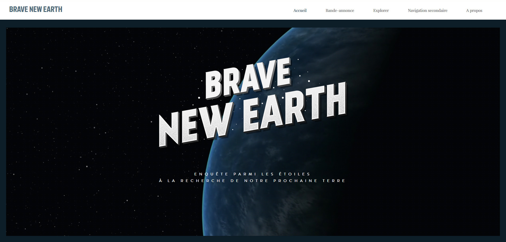
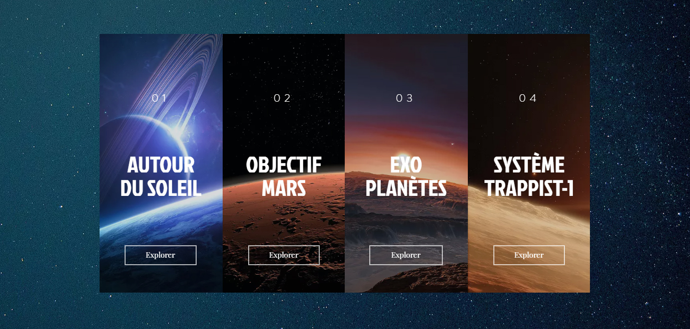

University projects
Brave New Earth (February-May 2017)
Goal: Creating a webdocumentary, including videos and vulgarisation articles, to investigate into the characteristics of a habitable planet, while building a guiding principle for the editorial policy and aesthetics, inspired by films noirs.
Context: Work in six-person team, 2nd year at Paul Sabatier University Institute of Technology.
Final grade: 19/20 (95/100)


 Français
Français
Made with by Benoît Pannetier © 2022
Finding Space by Takahiro Sakamoto